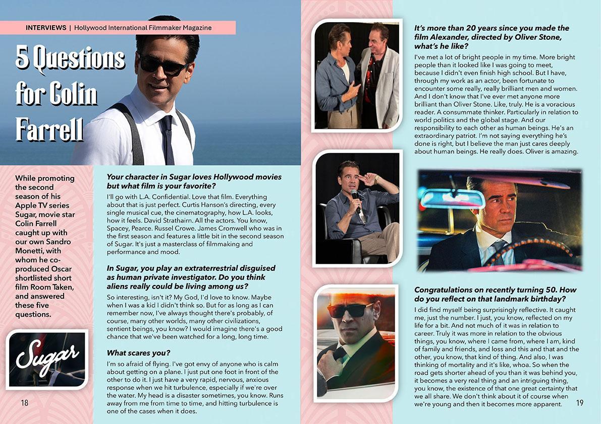

While promoting the second season of his Apple TV series Sugar, movie star Colin Farrell caught up with our own Sandro Monetti, with whom he co-produced Oscar shortlisted short film Room Taken, and answered these five questions.
Your character in Sugar loves Hollywood movies but what film is your favorite?
I’ll go with L.A. Confidential. Love that film. Everything about that is just perfect. Curtis Hanson’s directing, every single musical cue, the cinematography, how L.A. looks, how it feels. David Strathairn. All the actors. You know, Spacey, Pearce. Russel Crowe. James Cromwell who was in the first season and features a little bit in the second season of Sugar. It’s just a masterclass of filmmaking and performance and mood.
In Sugar, you play an extraterrestrial disguised as human private investigator. Do you think aliens really could be living among us?
So interesting, isn’t it? My God, I’d love to know. Maybe when I was a kid I didn’t think so. But for as long as I can remember now, I’ve always thought there’s probably, of course, many other worlds, many other civilizations, sentient beings, you know? I would imagine there’s a good chance that we’ve been watched for a long, long time.
What scares you?
I’m so afraid of flying. I’ve got envy of anyone who is calm about getting on a plane. I just put one foot in front of the other to do it. I just have a very rapid, nervous, anxious response when we hit turbulence, especially if we’re over the water. My head is a disaster sometimes, you know. Runs away from me from time to time, and hitting turbulence is one of the cases when it does.
It’s more than 20 years since you made the film Alexander, directed by Oliver Stone, what’s he like?
I’ve met a lot of bright people in my time. More bright people than it looked like I was going to meet, because I didn’t even finish high school. But I have, through my work as an actor, been fortunate to encounter some really, really brilliant men and women. And I don’t know that I’ve ever met anyone more brilliant than Oliver Stone. Like, truly. He is a voracious reader. A consummate thinker. Particularly in relation to world politics and the global stage. And our responsibility to each other as human beings. He’s an extraordinary patriot. I’m not saying everything he’s done is right, but I believe the man just cares deeply about human beings. He really does. Oliver is amazing.
Congratulations on recently turning 50. How do you reflect on that landmark birthday?
I did find myself being surprisingly reflective. It caught me, just the number. I just, you know, reflected on my life for a bit. And not much of it was in relation to career. Truly it was more in relation to the obvious things, you know, where I came from, where I am, kind of family and friends, and loss and this and that and the other, you know, that kind of thing. And also, I was thinking of mortality and it’s like, whoa. So when the road gets shorter ahead of you than it was behind you, it becomes a very real thing and an intriguing thing, you know, the existence of that one great certainty that we all share. We don’t think about it of course when we’re young and then it becomes more apparent.
This story first appeared in Issue 31 (Fall 2026) of Hollywood International Filmmaker.
As it appeared in print

